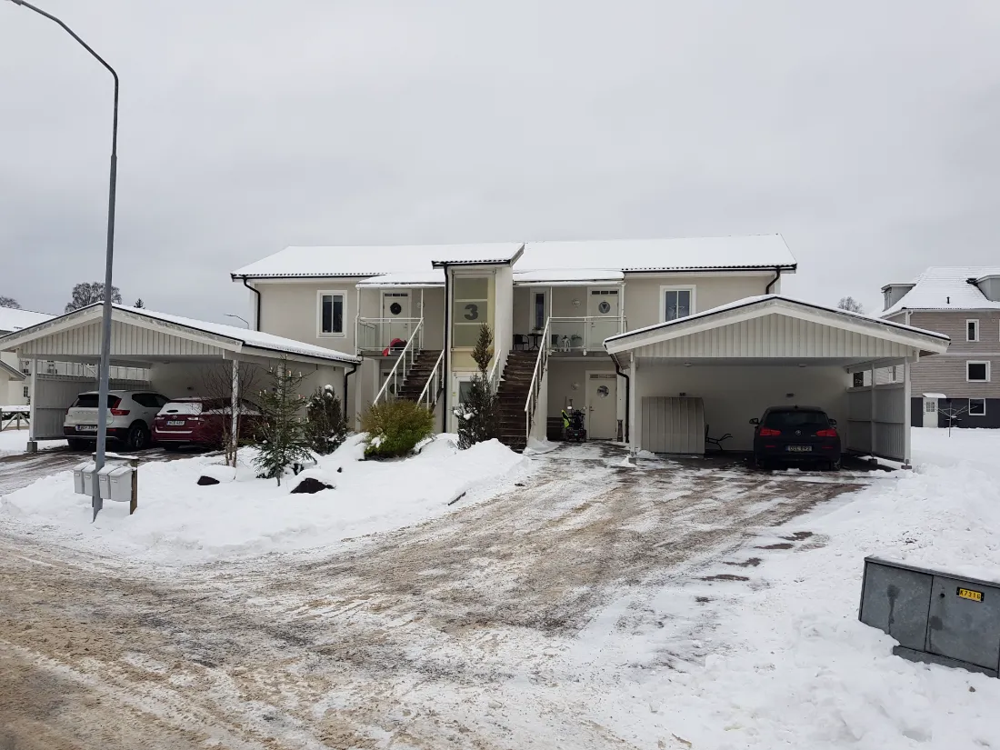
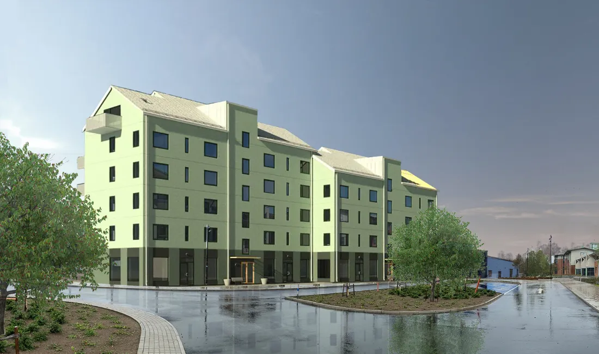
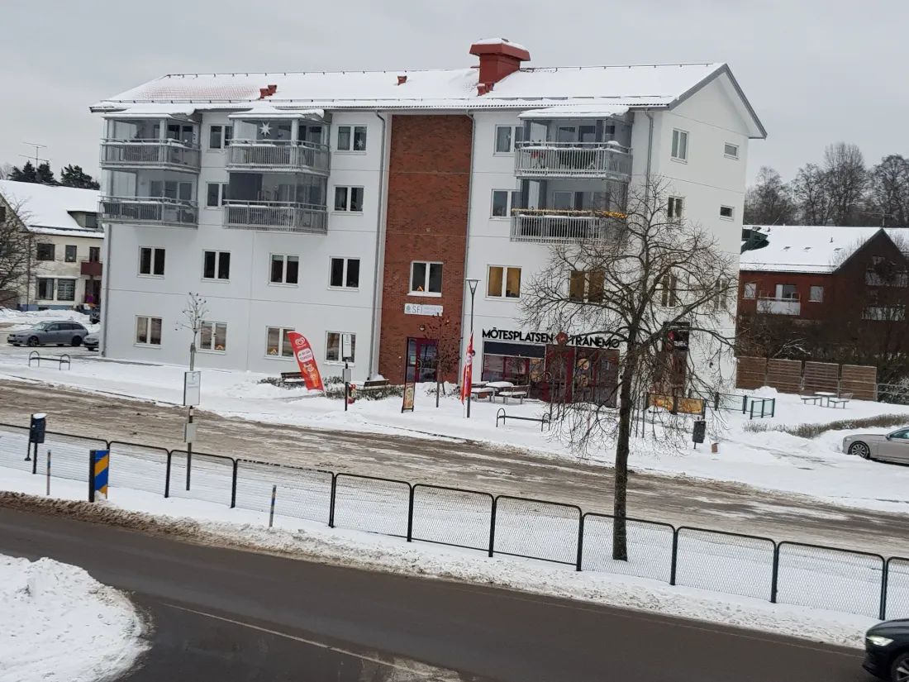
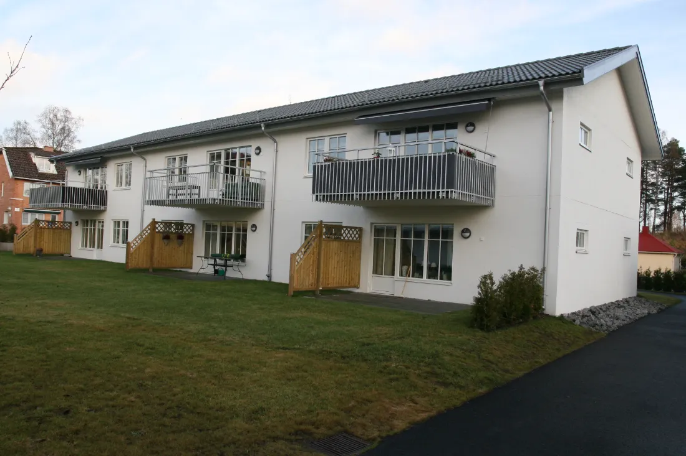
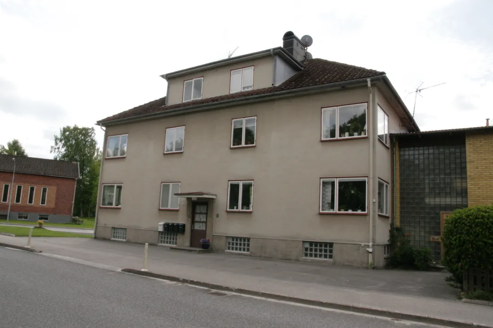
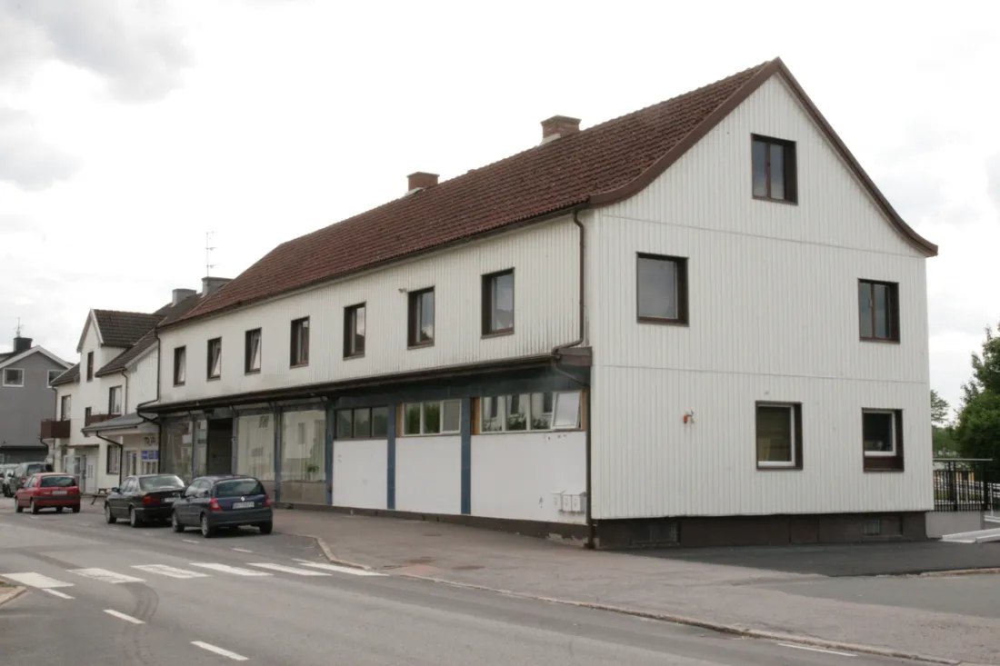

TranemoNorrgatan 3
Öppen planlösning och rum att trivas i.
3 rum & kök4 lägenheter

VÅRA FASTIGHETER
Bostäder med olika karaktär i Limmared och Tranemo. Välj ort och utforska husen.

TranemoÖppen planlösning och rum att trivas i.

Tranemo · VisualiseringEtt större boendeprojekt i Tranemo Park.

TranemoInglasade balkonger och boende ovan stadens lokaler.
 Tranemo
TranemoLjusa rum, öppen planlösning och genomtänkta detaljer.

TranemoVälplanerade lägenheter i ett hus med hiss.

TranemoEtt personligt boende en kort promenad från Storgatan.
 Tranemo
TranemoGamla läkarvillan, med en ny plats i vardagen.

LimmaredEtt hus med historia mitt på Storgatan.
 Limmared
LimmaredCharmiga lägenheter i en fastighet från tidigt 1900-tal.
Fastigheterna visar vårt bestånd. Ring eller mejla för aktuella lediga bostäder, hyra och visning.
NÄSTA STEG BÖRJAR MED ETT SAMTAL